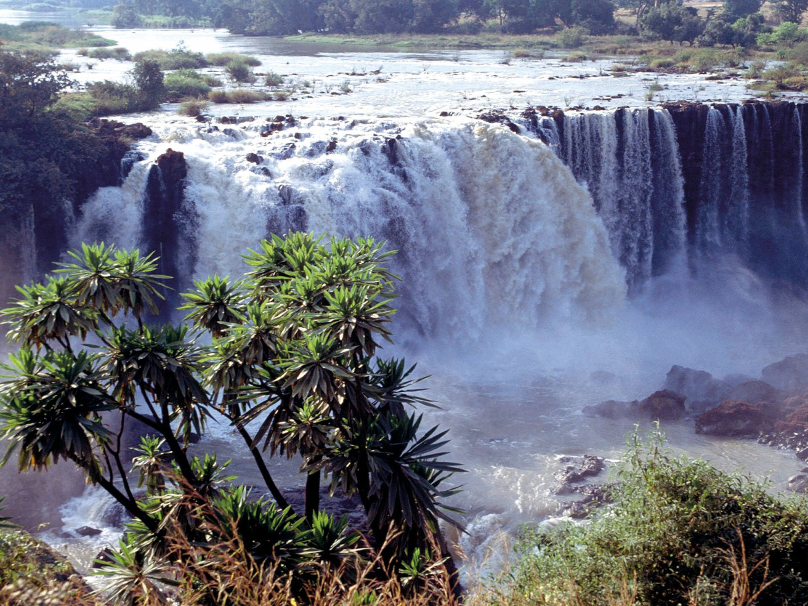
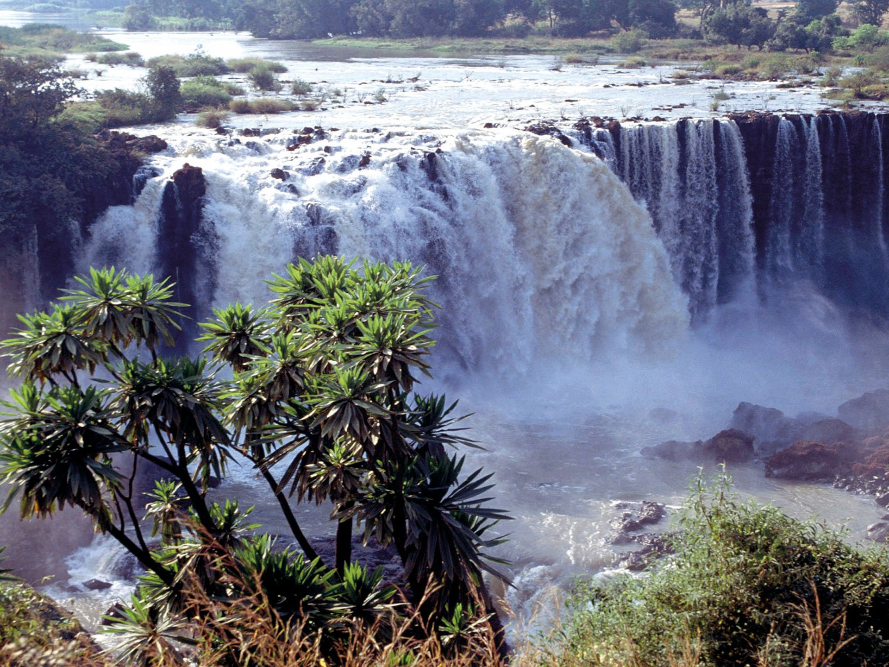
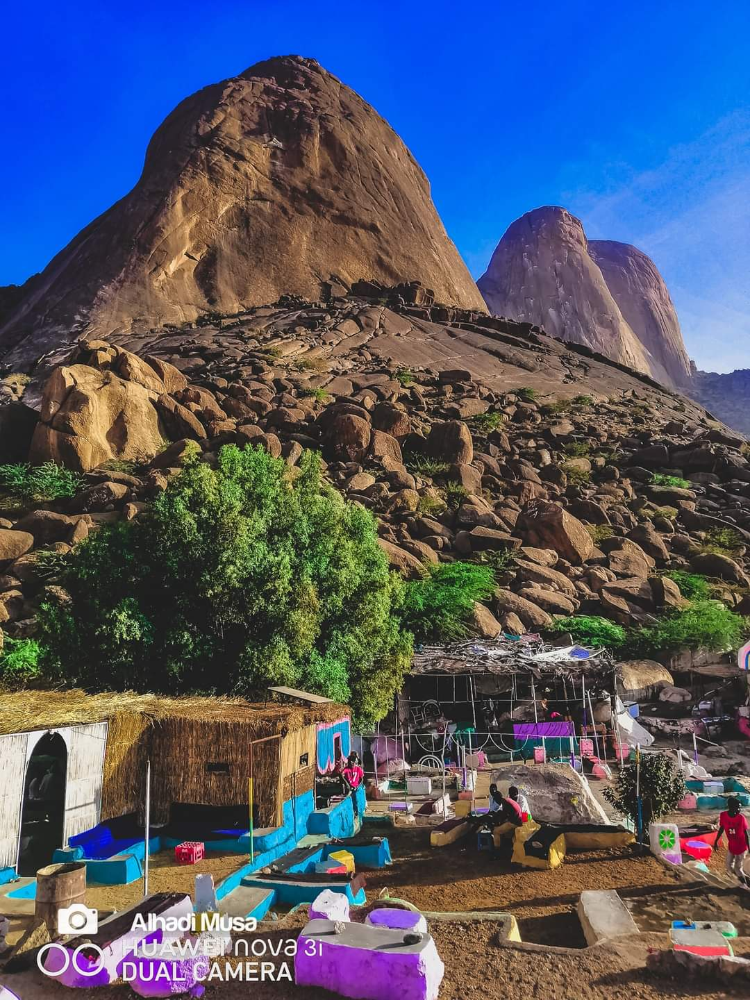
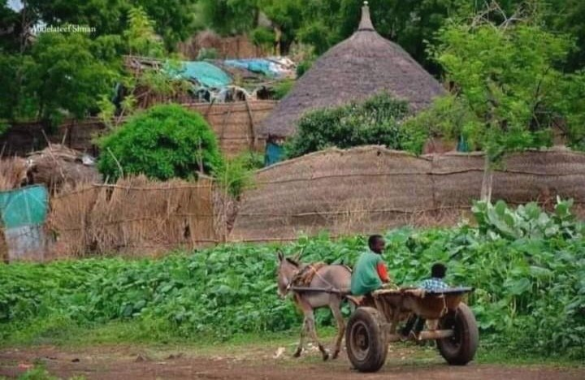
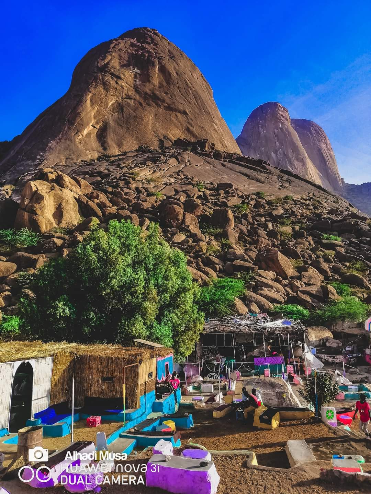
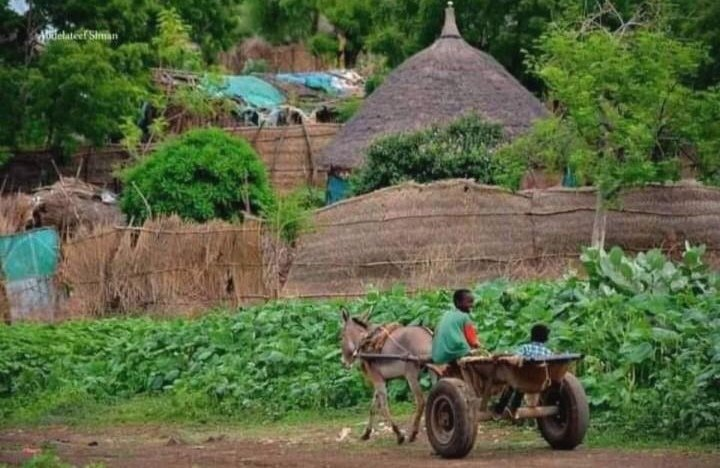

نظرة عامة عن السياحة في السودان
في السودان حوالي 220 هرماً وهو عدد أكبر من الأهرام المصرية. وتوجد بالولاية الشمالية وتبعد عن الخرطوم 500 كيلومتر، وهي من أقدم الأهرامات في وادي النيل هي التي أقامها الحكام الكوشيون. وإلى جانب الأهرامات توجد عدة معابد قديمة منها معبد الأسد أبادماك ومعبد آمون والكشك الروماني وكلها تقع في مدينة النقعة إضافة إلى منطقة المصورات الصفراء وبها بعض الآثار النوبية القديمة. تجري في السودان العديد من الأنهار أهما نهر النيل والنيل الأبيض والأزرق والأنهار الموسمية مما أتاح للسودان مناظر طبيعة خلابة يمكن أن تتركز في: التي تمتاز بنقاء المياه وخلوها من التلوث البحري وشفافيتها وتستقطب حاليا جزءا كبيرًا من السواح خاصة مُحبي البحر ورياضة الغطس تحت الماء والرياضات المائية الأخرى، وتزخر بالشعب المرجانية كما توجد به جزيرة سنقنيب وهي الجزيرة الوحيدة بالبحر الأحمر التي تكتمل فيها دائرة الشعاب المرجانية الحلقية «الأتول» ،والحافلة بالأحياء المائية توجد في السودان عدة محميات طبيعية تتنوع فيها الحياة البرية والنباتية والمناخات وتشكل مقصداً للباحثين والسياح والمهتمين بالحياة البرية حيث تستوطن فيها أنواع كثيرة من الحيوانات البرية والطيور والحشرات إلى جانب الأنواع المختلفة من النباتات بما فيها الأشجار والشجيرات والأعشاب. ومن أبرز المحميات : حظيرة الدندر في جنوب شرق السودان و محمية الردوم الطبيعية. توجد في السودان عدة محميات طبيعية تتنوع فيها الحياة البرية والنباتية والمناخات وتشكل مقصداً للباحثين والسياح والمهتمين بالحياة البرية حيث تستوطن فيها أنواع كثيرة من الحيوانات البرية والطيور والحشرات إلى جانب الأنواع المختلفة من النباتات بما فيها الأشجار والشجيرات والأعشاب. ومن أبرز المحميات : حظيرة الدندر في جنوب شرق السودان و محمية الردوم الطبيعية. توجد في السودان عدة متاحف متنوعة يتركز معظمها في العاصمة المثلثة وأهمها هي:
- متحف السودان القومي
- متحف التاريخ الطبيعي
- متحف بيت الخليفة
- المتحف الحربي
- متحف القصر
- متحف شيكان
- متحف السلطان علي دينار
- متحف حضارة كرمة
- متحف محمد نور هداب
الولاية الشمالية كغيرها من ولايات البلاد تتفرد بإمكانات سياحية عديدة وهى منطقة شهدت أعظم الحضارات الإنسانية والتي امتدت لثمانية آلاف عام إلا أنها تحتاج لتنميتها ونشر الوعي حولها وتغيير المفاهيم المجتمعية تجاهها من اجل النهوض بها لتحقيق اكبر عائد منها خاصة في بلد يذخر بموارد سياحية ثرة حباها به الله سبحانه وتعالى. يذخر السودان بإمكانات وموارد سياحية كبيرة وذلك لتنوع بيئاته الجغرافية والتاريخية والثقافية في الشمال والشرق والغرب من أهرامات ومعابد ومياه البحار والأنهار والصحارى الممتدة بأجوائها المتعددة بجانب السياحة الثقافية المتمثلة في الفلكلور والعادات والتقاليد والفنون الشعبية لتعدد الأعراق والاثنيات به.
 

جبل التاكا ويعد من المواقع السياحية المشهورة في السودان ويقع في ولاية كسلا شرق السودان حيث يمتد الجبل في شكل طوق يلف مدينة كسلا من الجهة الشرقية حيث يعتبر خَشِم القِرْبَة مدينة تقع في ولاية كسلا شمال شرق السودان، على ارتفاع 452 مترًا (1486 قدمًا) فوق سطح البحر، وتبعد عن الخرطوم العاصمة حوالي 560 كيلومترًا،
 



في نيرتتي توجد أكبر استراحة للسياح الذين يقصدون السياحة والتنزه في شلالات قلول ومرتجلو الساحرة لذلك المنطقة ذاخرة ومليئة بالموارد ومصادر السياحة ذات التنوع الحيوي حيث المساقط المائية المنحدرة من أعالي جبل مرة والعيون المتفجرة من أعماق صخور شلالات مرتجلو وقلول الشهيرة، وهناك أنواع متفردة من الطيور المهاجرة والمقيمة تعطي رسماً للوحة جمالية سياحية ذات منظر أخاذ يسر العين.[4] شلال نيرتتي: هي احدي مدن زالنجي التي تقع في الجبل وتتميز بأجود أنواع الفواكه.

السياحة في الخرطوم تضم الخرطوم العديد من المعالم التاريخية والأثرية والسياحية منها[٢]: متحف التاريخ الطبيعي الذي يقع جغرافيًّا في شارع الجامعة، وقد أُنشئ في العام 1929 للميلاد من أجل نشر العلم، ومن أجل أن يكون مزارًا سياحيًّا شهيرًا لعشاق الطبيعة، ويضم حيوانات حية ومحنطة بكافة أصنافها وأنواعها من زواحف، وطيور، وحيوانات، وحشرات. غابة السنط التي تعد من أهم المناطق السياحة في المدينة، وأجمل الغابات في جمهورية السودان،